GX Works2 實作 · FX3S
在 GX Works2 寫 FX3S：從開新工程到畫完階梯圖、STL、SFC
這頁照著真的 GX Works2 畫面，一步一步做三件事：建立工程並畫出一條完整的階梯圖、在階梯圖裡寫 STL 步進、建立 SFC 工程。每一步都有實際截圖，也寫了做錯時會看到什麼。建議一邊開著 GX Works2 一邊照做。
| 堂 | 做哪幾節 | 做完會 |
|---|---|---|
| 第 1 堂（學完第 2 章後） | 2 建立工程 → 3 認識畫面 → 4 畫一條階梯圖 → 6 存檔；有 PLC 再做 10、11 寫入和監視 | 開工程、畫自保持、轉換、存檔、寫進 FX3S 看燈亮 |
| 第 2 堂（學完第 4 章前半） | 1 三種寫法差在哪 → 7 在梯形圖寫 STL → 再做一次寫入和監視 | 用 STL 寫一個三步的流程並監視步序 |
| 第 3 堂（學完第 4 章分支） | 8 建立 SFC 工程 → 9 SFC 分支 | 建 SFC 工程、畫並行和選擇分支 |
1 三種寫法差在哪
FX 系列寫「一步一步動作」的程式有三種寫法。最重要的一句話：STL 和 SFC 是同一個東西的兩種畫法。你在 GX Works2 畫的 SFC，寫進 PLC 以後就是 STL 指令。
| 一般階梯圖（用 M 記步） | STL 步進階梯圖 | SFC 順序功能圖 | |
|---|---|---|---|
| 樣子 | 一般接點、線圈 | 還是階梯圖，多了 STL S20、SET S21、RET | 流程圖：方框是步，短橫線是移轉條件 |
| 記住第幾步 | 自己用 M 自保持 | S 狀態元件 | S 狀態元件（方框旁的數字就是 S 編號） |
| 換下一步 | 自己寫：下一步回頭切斷上一步 | SET S21，上一步自動關 | 移轉條件最後接 [TRAN] |
| 建立工程時選 | 程式語言：梯形圖 | 程式語言：梯形圖 | 程式語言：SFC |
| 寫進 PLC 後 | 一般指令 | STL / RET 指令 | 也是 STL / RET 指令 |
| 適合 | 很短的動作、不需要步序 | 想用階梯圖畫面、方便印出來對照 | 流程長、有分支，想一眼看懂現在在哪一步 |
同一個程式，三種畫法（可以操作）
例題：上電後 Y0 亮 1 秒、Y1 亮 1 秒，一直輪流（就是你講義裡的「雙燈閃爍」）。按下面的分頁切換，燈號和程式會同步動。
STL S20 就是 SFC 的一個方框，段落裡 SET S21 前面的條件就是 SFC 的移轉條件，M8002 → SET S0 就是 SFC 工程裡的「梯形圖塊」。2 建立工程時選什麼
選單 → 新增，或按工具列最左邊的白紙圖示（Ctrl＋N），會跳出「新增」對話框。四個欄位由上到下選：
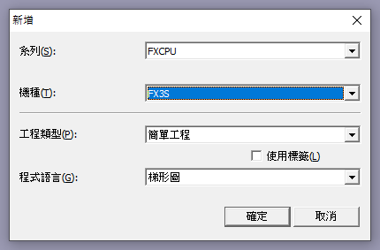
| 欄位 | 選什麼 | 選錯會怎樣 |
|---|---|---|
| 系列 | FXCPU | 預設是 QCPU，沒改的話機種清單裡找不到 FX3S |
| 機種 | FX3S | 選成 FX3U 也能寫程式，但寫入實機時會因為機種不符被擋下來 |
| 工程類型 | 簡單工程 | 結構化工程是另一套做法，學校不用 |
| 使用標籤 | 不勾 | 勾了以後程式語言就選不到 SFC，而且轉換之外還要多做編譯 |
| 程式語言 | 梯形圖 或 SFC | 看下面的判斷 |
STL S20 這些指令。→ 看第 7 節3 認識畫面
按下確定後，工程建好，畫面長這樣。先知道每一區叫什麼，後面的步驟才看得懂。
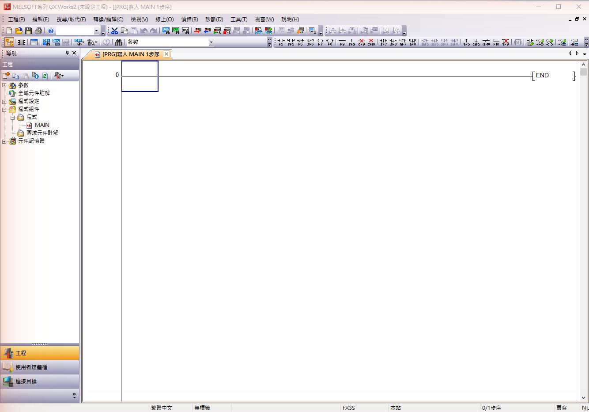
| 位置 | 名稱 | 用來做什麼 |
|---|---|---|
| 最上面一排字 | 功能表：工程、編輯、搜尋/取代、轉換/編譯、檢視、線上、偵錯、診斷、工具、視窗、說明 | 所有功能都找得到。這頁用到的是工程、轉換/編譯、檢視、線上、偵錯 |
| 功能表下面兩排圖示 | 工具列 | 常用功能的按鈕。右邊那一排有 F5、sF5、F6… 的是梯形圖工具列，畫階梯圖都靠它 |
| 左邊 | 導航視窗（工程樹） | 參數、全域元件註解、程式設定、程式組件 → 程式 → MAIN、區域元件註解、元件記憶體。點兩下 MAIN 打開程式 |
| 左下三個按鈕 | 工程／使用者媒體櫃／連接目標 | 切換導航視窗的內容。接 PLC 時要切到「連接目標」 |
| 中間 | 工作視窗 | 畫梯形圖的地方。上面的分頁寫著 [PRG]寫入 MAIN 1步序：「寫入」代表現在是可以編輯的寫入模式 |
| 藍色方框 | 游標 | 現在要輸入的那一格。用方向鍵或滑鼠移動 |
| 最下面 | 狀態列 | 顯示「無標籤」、機種 FX3S、目前步數（例如 4/5步序）、「覆寫」或「插入」 |
梯形圖工具列放大來看。滑鼠停在按鈕上會出現名稱和快捷鍵，例如「常開接點 (F5)」。按鈕下面的小字就是快捷鍵：sF5 是 Shift＋F5，cF9 是 Ctrl＋F9，aF7 是 Alt＋F7。
4 實作 A：畫一條完整的階梯圖
目標：馬達自保持（練習題 E3）。按 X0 啟動、按 X1 停止，Y0 自己保持。要畫的是這四個指令：LD X0、OR Y0、ANI X1、OUT Y0。
- 確認游標在第一格。藍色方框在左上角。分頁上要寫「寫入」；如果寫的是「讀取」或「監看」，按 F2 切回寫入模式。
- 按 F5（常開接點），輸入
X0，按 Enter。會跳出「輸入梯形圖」的小視窗，直接打字就好。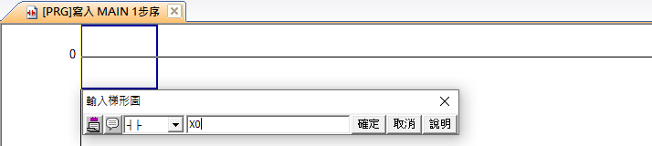
「輸入梯形圖」視窗。左邊的下拉選單顯示現在要放的符號，右邊打元件編號，按確定或 Enter。 打
X0就好，軟體會自動補成 X000。游標會自己往右移一格。 - 按 F6（常閉接點），輸入
X1，Enter。這是停止按鈕。 - 按 F7（線圈），輸入
Y0，Enter。線圈會自動放到最右邊，中間的橫線也會自動補上。游標跳到下一列。 - 畫並聯的自保持接點。把游標移到 X000 正下方那一格（第二列第一格），按 Shift＋F5（並聯常開接點），輸入
Y0，Enter。軟體會放一個 Y000 接點，並自動畫一條豎線接回上面。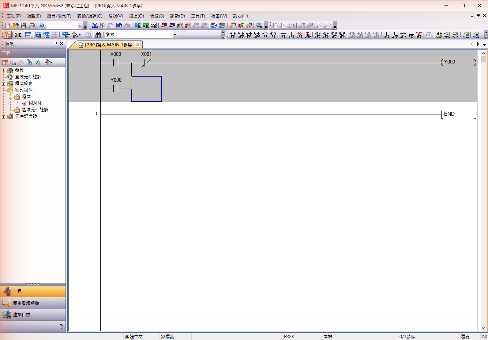
畫完的樣子。灰色底代表「還沒轉換」。 - 按 F4 轉換。功能表是 → 轉換。成功後灰底變白底，左邊出現步號（0、4），狀態列的步數從 1 變成 5。
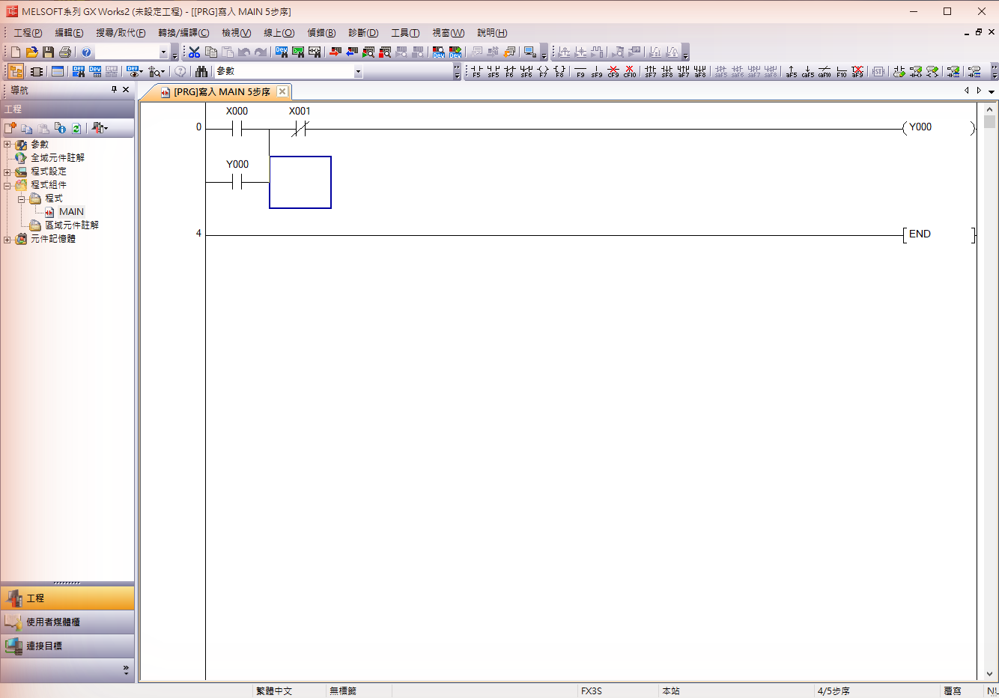
轉換成功：底色變白，END 前面的數字 4 代表這段程式用了 4 步。 做錯：沒按 F4 就想寫入 PLC 或關掉視窗，軟體會提醒有未轉換的梯形圖。灰底的程式不算數。
LD X0 按 Enter、OR Y0 Enter、ANI X1 Enter、OUT Y0 Enter，軟體會自己畫成梯形圖。背得出指令的人這樣最快，而且和 LadderLab 練習題輸入的文字一模一樣。寫完可以把同樣的指令貼到 練習題 E3 評分，確認邏輯對了再去學校寫入實機。
5 編輯操作與快捷鍵
畫錯了怎麼改、怎麼插入一列、線怎麼畫。下表的按鍵都依官方操作手冊附錄 1 核對過。
| 要做的事 | 按鍵 | 說明 |
|---|---|---|
| 放元件 | ||
| 常開接點／常閉接點 | F5／F6 | 串聯在游標位置 |
| 並聯常開／並聯常閉 | Shift＋F5／Shift＋F6 | 放在游標位置，自動畫豎線接回上一列 |
| 線圈 | F7 | OUT。計時器打 T0 K10，計數器打 C0 K5 |
| 應用指令 | F8 | 方括號的指令：SET M0、RST Y0、MOV K5 D0、STL S20、RET |
| 上升沿／下降沿接點 | Shift＋F7／Shift＋F8 | LDP、LDF。並聯的是 Alt＋F7／Alt＋F8 |
| 畫線 | ||
| 橫線／豎線 | F9／Shift＋F9 | 豎線畫在游標的左邊緣往下 |
| 刪橫線／刪豎線 | Ctrl＋F9／Ctrl＋F10 | |
| 用方向鍵畫線或擦線 | Ctrl＋←→↑↓ | 往那個方向畫一段，已經有線就擦掉 |
| 修改 | ||
| 改一個元件 | 在它上面點兩下，或按 Enter | 跳出同一個輸入視窗，改完按確定 |
| 刪一個元件 | Delete | |
| 常開、常閉互換 | Ctrl＋/ | 不用刪掉重畫 |
| 插入一列／刪除一列 | Shift＋Insert／Shift＋Delete | 在兩條之間加新的一條，先插入一列空白 |
| 插入一格／刪除一格 | Ctrl＋Insert／Ctrl＋Delete | 在一串接點中間再塞一個 |
| 覆寫／插入切換 | Insert | 狀態列右下角會顯示「覆寫」或「插入」。覆寫模式下新元件會蓋掉游標上原有的 |
| 復原／重做 | Ctrl＋Z／Ctrl＋Y | |
| 剪下、複製、貼上 | Ctrl＋X、Ctrl＋C、Ctrl＋V | 先用滑鼠拖曳選取幾條 |
| 轉換與模式 | ||
| 轉換 | F4 | 全部重新轉換是 Shift＋Alt＋F4 |
| 寫入模式／讀取模式 | F2／Shift＋F2 | 讀取模式不能改，用來防止手滑 |
| 監看開始／停止 | F3／Alt＋F3 | 要先連上 PLC 或開模擬 |
| 顯示元件註解 | Ctrl＋F5 | 接點下面顯示「啟動」「停止」這些字 |
| 找元件 | Ctrl＋F | 想知道 M10 用在哪幾條 |
6 存檔與開啟工程
- 存檔： → 另存新檔，跳出「工程另存新檔」。選資料夾、打檔案名稱（例如
E3_馬達自保持），按存檔。之後按 Ctrl＋S 就會直接存。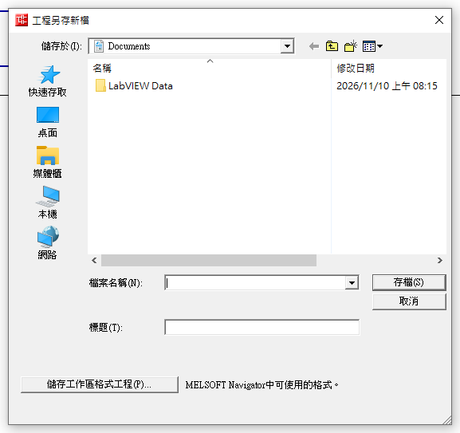
「工程另存新檔」。這樣存出來是一個 .gxw檔，可以直接複製到隨身碟。對話框左下角的「儲存工作區格式工程」是另一種存法，會存成一整個資料夾（工作區），給 MELSOFT Navigator 用。學校作業存成單一個 .gxw 檔最方便帶走。
- 開啟舊工程： → 開啟（Ctrl＋O），找到 .gxw 檔，按開啟。如果當初是用工作區格式存的，要按左下角的「開啟工作區格式工程」去找資料夾。
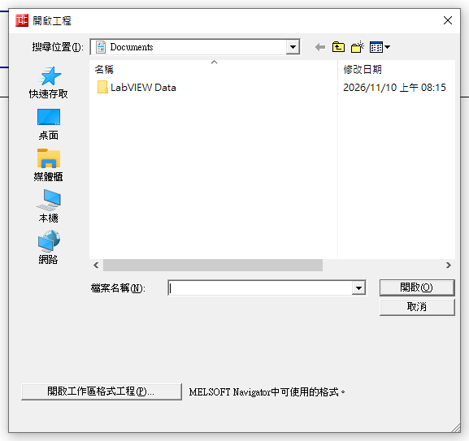
「開啟工程」。 - 打開之後看不到程式？到左邊工程樹，展開 程式組件 → 程式，點兩下 MAIN。
- 下課前：先 F4 轉換，再 Ctrl＋S 存檔，再關軟體。沒轉換的梯形圖存檔時會被要求先處理。
7 實作 B：在梯形圖工程裡寫 STL 步進
目標：用 STL 寫雙燈閃爍（練習題 E12）。工程照第 2 節建立，程式語言選梯形圖。STL、SET、RET 都是用 F8（應用指令）輸入。
- 第一條：F5 輸入
M8002，再 F8 輸入SET S0。M8002 是 PLC 從 STOP 切 RUN 的第一個掃描 ON 一次，用來啟動初始步。 - 按 F8，輸入
STL S0，Enter。STL 指令自己佔一條，表示從這裡開始是 S0 這一步。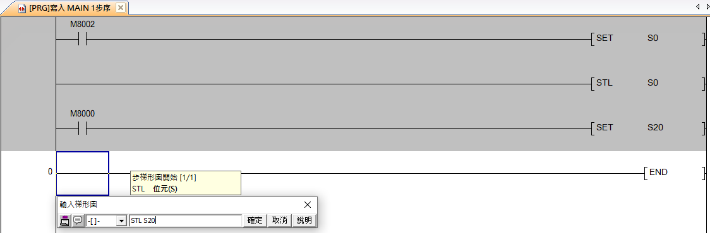
用 F8 輸入 STL S20。打到 STL 時，軟體會提示這是「步梯形圖開始」。 - S0 裡：F5
M8000、F8SET S20。M8000 是 RUN 中常 ON，代表一進待機就換到 S20。 - F8
STL S20。接著這一步有兩個輸出：F7Y0，以及 F7T0 K10（T0 計 1 秒，K10 = 10 × 0.1 秒）。這裡最容易卡住。步裡面連續兩個沒有條件的輸出，不能各自從左母線畫一條，要畫成同一條的上下兩個分支：Y000 在上，往下拉一條豎線（Shift＋F9），T0 K10 接在下面。畫成兩條各自獨立的，按 F4 會跳出下面這個訊息。
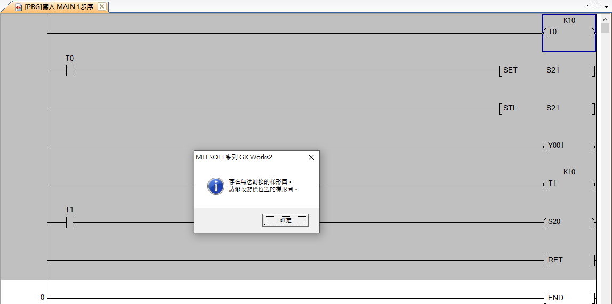
畫錯時 F4 的結果：「存在無法轉換的梯形圖。請修改游標位置的梯形圖。」游標會停在有問題的那一條。 - F5
T0、F8SET S21：時間到，換到 S21。 - F8
STL S21，一樣畫Y1和T1 K10兩個分支。 - F5
T1、F7S20：跳回前面的步，用線圈 OUT S20，不是 SET。這是 FX 手冊的寫法；在 SFC 圖上就是 JUMP。 - 最後 F8
RET：告訴 PLC 步進區結束。 - F4 轉換。正確的結果長這樣：
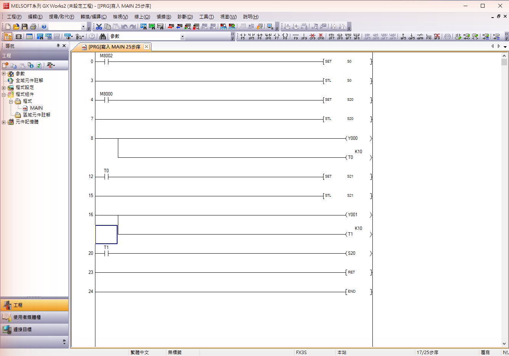
轉換成功，共 25 步。注意 Y000／T0 和 Y001／T1 都是「一條兩個分支」，最後跳回是 (S20) 線圈。
LD M8002 SET S0 STL S0 LD M8000 SET S20 STL S20 OUT Y000 OUT T0 K10 LD T0 SET S21 STL S21 OUT Y001 OUT T1 K10 LD T1 OUT S20 RET
這份指令可以直接貼到 練習題 E12 執行。在 GX Works2 也可以不按功能鍵，照這個順序一行一行打字輸入。
① 在步裡用
OUT 的輸出，離開這一步就自動 OFF；要跨步保持用 SET，之後在別步 RST。② 同一個 Y 可以在不同步各寫一次
OUT，不算雙線圈。③ 換步的那一個掃描，前後兩步會同時 ON。下降和上升這種相反動作，要在步裡加互鎖接點（FX 手冊建議）。
有些課本的 STL 是畫成一個粗的接點（−[STL]−）。GX Works2 預設畫成方括號指令；想看成接點的樣子，到 → 選項 → 程式編輯器 → 梯形圖，勾「以接點形式顯示 STL 指令」（Display STL instruction in contact format，只有 FX 無標籤工程可以用）。
8 實作 C：SFC 工程（重點）
目標：把上一節的雙燈閃爍改用 SFC 畫。步驟依官方入門指南 4.2.7「程式的創建（FXCPU）」。
- 新增工程，程式語言選 SFC。「使用標籤」一定不要勾。
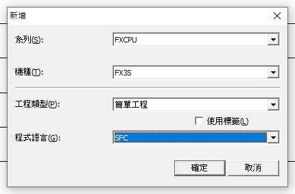
和第 2 節一樣，只有最後一欄改成 SFC。 做錯：勾了「使用標籤」，程式語言清單裡就選不到 SFC（官方說明：FX 的 SFC 不支援標籤）。
- 第 0 塊設成「梯形圖塊」。按確定後馬上跳出「塊資訊設定」。標題打「啟動梯形圖」，塊類型選梯形圖塊，按執行。
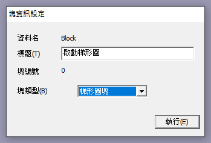
第 0 塊：塊類型選「梯形圖塊」。 為什麼：FX 的 SFC 要靠一段梯形圖把初始步 S0 打開。這段梯形圖每個掃描都會執行，急停、異常處理也寫在這種塊。
- 在第 0 塊寫 M8002 → SET S0，按 F4 轉換。畫面會分成左右兩半：左邊是這一塊的圖（只有一格 LD），右邊是它的梯形圖。在右邊照第 4 節的方法輸入：F5
M8002、F8SET S0，然後 F4。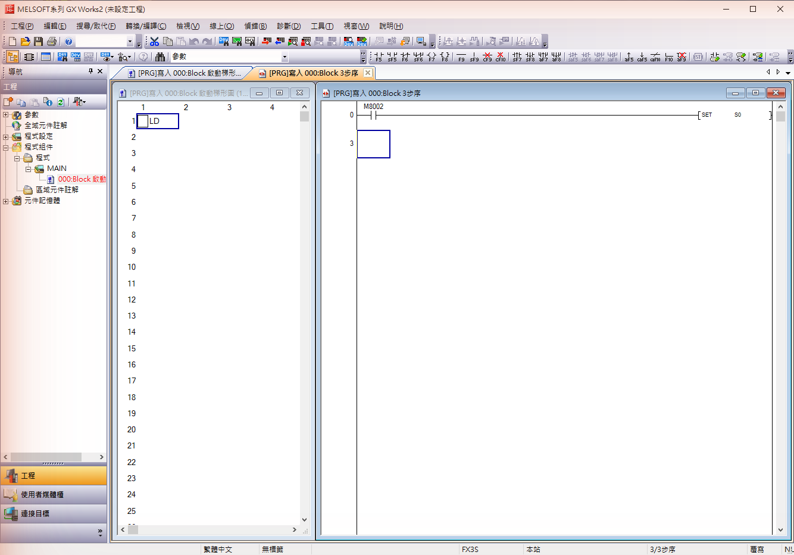
第 0 塊寫好並轉換。左邊工程樹的「000:Block 啟動梯形圖」是紅字，代表整個工程還有東西沒轉換完。 做錯：忘了這一條，SFC 畫得再好，一個步都不會亮（最常見的錯誤）。
- 新增 SFC 塊。在工程樹的 MAIN 上按右鍵 → 新增資料。資料類型是「程式」，程式語言只有 SFC 可以選，資料名 Block1 不用改，按確定。
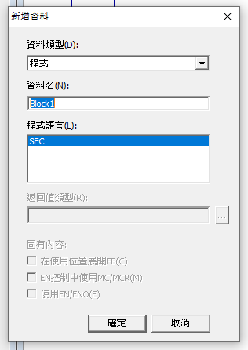
「新增資料」。 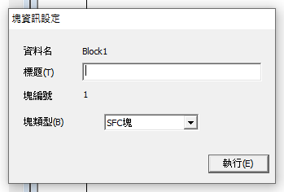
第 1 塊：塊類型選「SFC 塊」。 - 認識 SFC 編輯畫面。工程樹多了「001:Block1」。畫面一樣分左右：左邊是 SFC 圖（有行號 1、2、3… 和列號），右邊是目前選到的步或移轉的梯形圖。軟體已經先幫你放好初始步 0 和移轉 0。
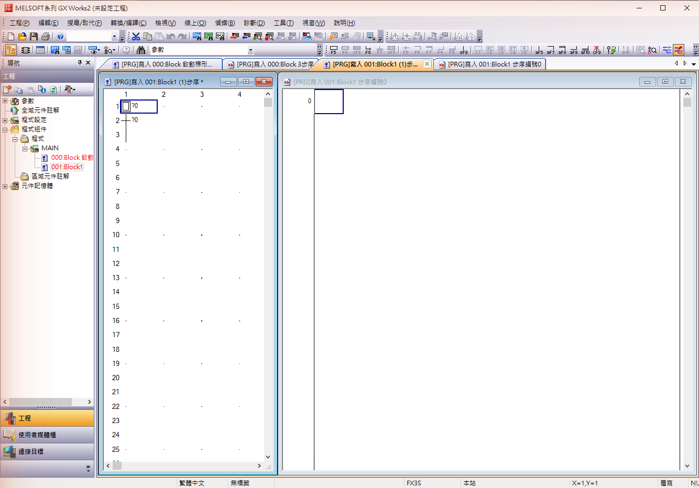
新的 SFC 塊。編號前面的 ? 代表「這一格裡面還沒有寫程式」。上面的工具列也換成 SFC 專用的。 SFC 工具列（放大）。游標在「步」的列時 F5 是步、F8 是 JUMP；在「移轉」的列時 F5 是移轉、F6／F7 是選擇／並行分支、F8／F9 是選擇／並行合併。 - 放步和移轉。在左邊 SFC 圖的格子上點兩下（或按 Enter），跳出「輸入 SFC 符號」。圖形符號選 STEP，編號打 20，按確定。游標會自動往下。
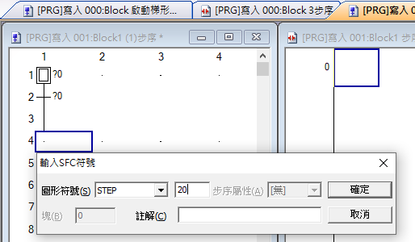
在第 4 行放步 20。註解欄可以填「Y0 亮」，之後能顯示在圖上。 行第 1 列「輸入 SFC 符號」要填的10已經有了（初始步，雙框）2┼ 0已經有了（移轉 0）3│連接線，不用輸入420STEP/205┼ 1TR/16│721STEP/218┼ 2TR/210↳ 20JUMP/20（跳回 S20）步放在第 1、4、7… 行，移轉放在第 2、5、8… 行。移轉旁的數字（0、1、2）只是移轉編號，不是 X0、X1！條件要寫在移轉裡面。
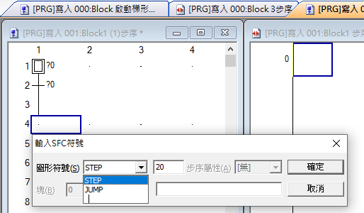
在步的那幾行，圖形符號可以選 STEP、JUMP 或豎線。JUMP 就是從這裡選。 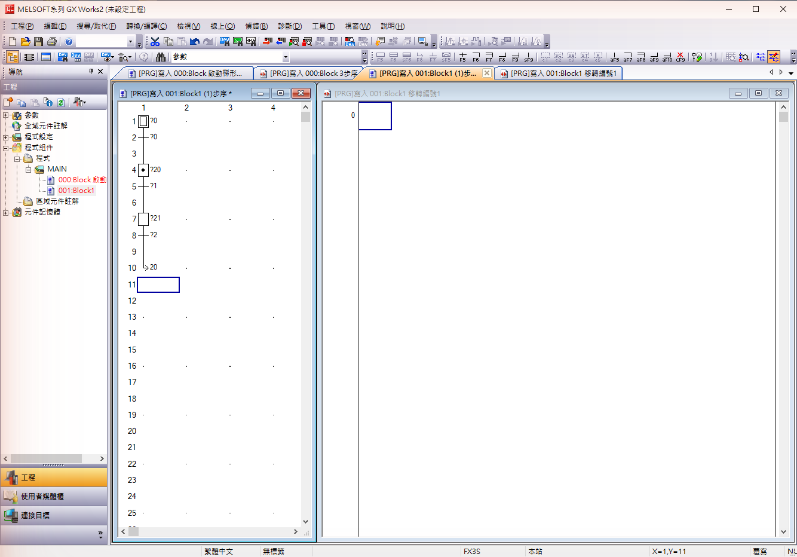
圖畫好了。每個編號前面都還有 ?，因為裡面的程式都還沒寫。被 JUMP 指到的步 20，方框裡多了一個黑點。 FX 的規則（官方）：S0～S9 是初始步，每個 SFC 塊要從其中一個開始，所以最多 10 個 SFC 塊；一般步從 S10 以後（三菱慣例從 S20 開始，S10～S19 留給 IST 指令）；每個塊最多 512 步；步號在整個程式不能重複。另外，FX3S 本身只有 S0～S255，所以實際能用的步比 512 少：所有 SFC 塊加起來，一般步最多 246 個（S10～S255）。
- 寫每一步的動作。在左邊點一下步 20，右邊就是它的梯形圖（分頁標題是「步序編號20」）。在右邊輸入 F7
Y0和 F7T0 K10（一樣要畫成上下兩個分支），按 F4 轉換。左邊步 20 前面的 ? 會消失。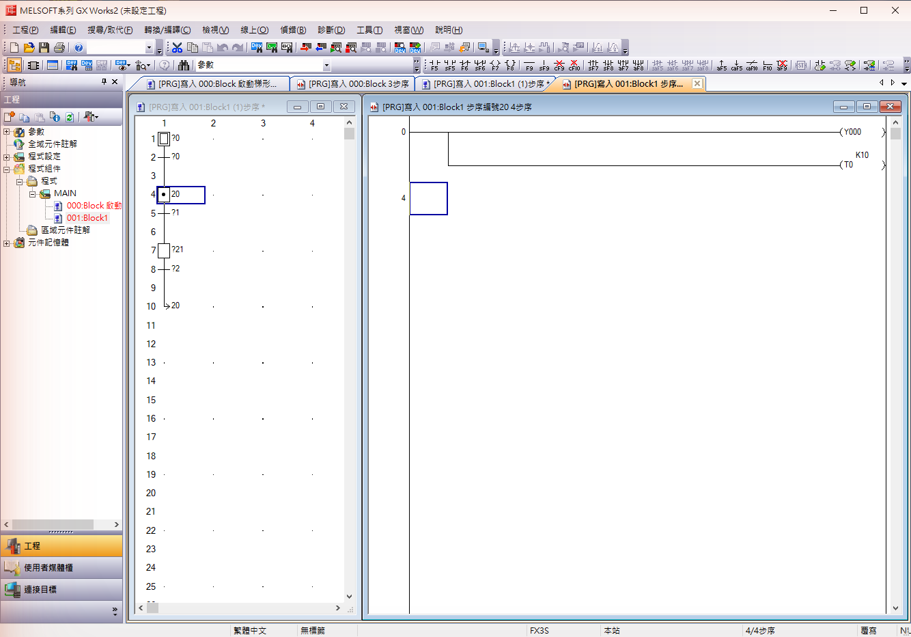
步 20 寫好並轉換：左邊的「?20」變成「20」。 Y1、T1 K10。步 0 是待機，沒有動作，可以不寫。步的梯形圖裡不用寫 STL，軟體會自己加。如果你的畫面沒有左右並列，用 裡的「開啟 Zoom」切過去，寫完再用「返回 SFC 塊」（Ctrl＋R）回來；也可以到 工具 → 選項 → 程式編輯器 → SFC → SFC 圖，勾「SFC 圖和 Zoom 並列顯示」。
- 寫每一個移轉條件，結尾是 TRAN。在左邊點移轉 1，右邊分頁變成「移轉編號1」。輸入 F5
T0，然後按 F8，什麼都不打直接按確定（也可以打TRAN），[TRAN] 就會出現，再 F4 轉換。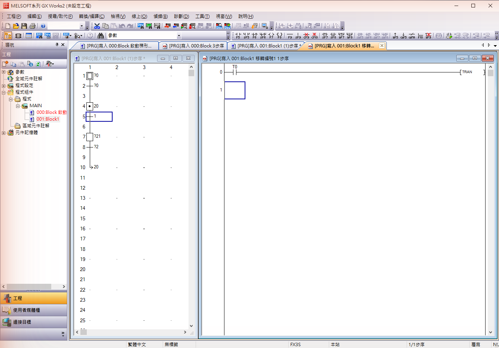
移轉 1：T0 ON 就換到下一步。結尾是 [TRAN]，不是線圈。 - 移轉 0（S0 → S20）：
M8000→ TRAN（一進 S0 就往下）。 - 移轉 1（S20 → S21）：
T0→ TRAN。 - 移轉 2（S21 → 跳回 S20）：
T1→ TRAN。
官方入門指南的說法：移轉條件只能有一個虛擬線圈 [TRAN]，輸入方法是按線圈（F7）或應用指令（F8）後直接按確定。
做錯：在移轉裡寫
SET S21或OUT Y0，轉換會報錯。換步只能用 TRAN。 - 移轉 0（S0 → S20）：
- 整個 SFC 轉換。點回左邊的 SFC 圖，按 F4。下方「輸出」視窗顯示結果，
Error: 0, Warning: 0就是成功。工程樹上的紅字也會變回黑字。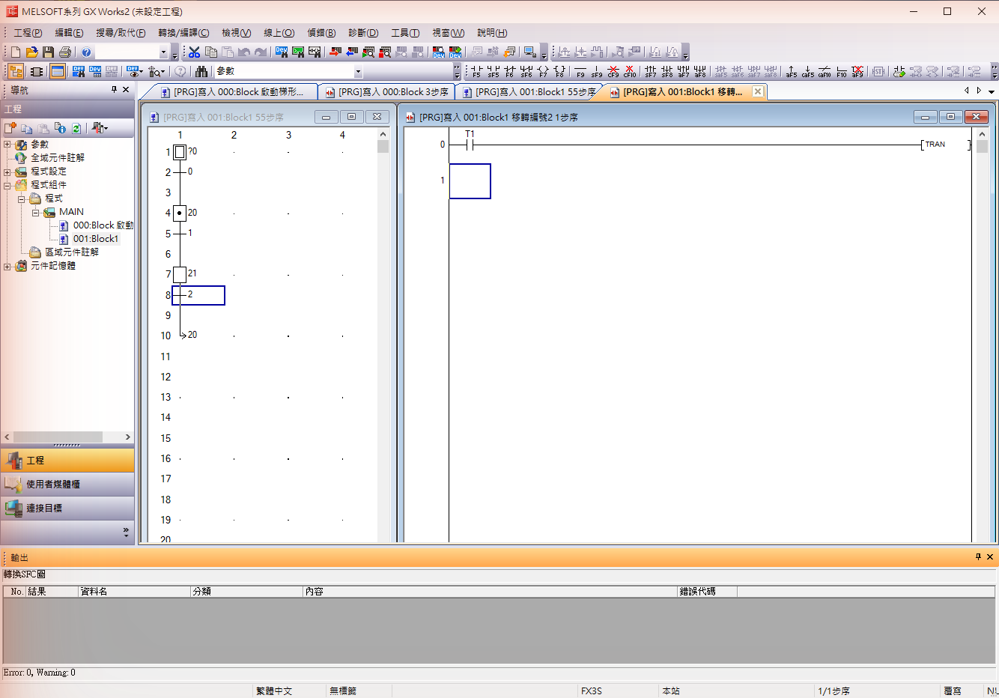
全部轉換成功。步 0 還是「?0」沒關係，它本來就沒有動作。有錯誤時，在輸出視窗的那一行點兩下會跳到出錯的位置。
梯形圖塊 000 =
LD M8002 / SET S0步 0 + 移轉 0 =
STL S0 / LD M8000 / SET S20步 20 的梯形圖 =
STL S20 / OUT Y000 / OUT T0 K10，移轉 1 = LD T0 / SET S21JUMP 20 =
OUT S20 塊結尾 = RET上面這個工程轉換後是 55 步；第 7 節用 STL 直接寫是 25 步。SFC 工程會多存一些圖的資訊，程式的動作是一樣的。
9 SFC 分支：鑽床（並行分支 + 選擇分支）
例題（練習題 E13）：夾緊後兩支鑽頭同時鑽孔，兩支都回原點才旋轉工件；鑽滿 3 對孔就鬆開，否則再鑽一次。
| SFC 符號（符號輸入裡選） | 意思 | STL 寫法 |
|---|---|---|
==D 並行分支 | 一個移轉成立，同時開始好幾條（雙橫線） | 同一個移轉裡 SET S21、SET S24 |
==C 並行合併 | 每一條都完成才往下（雙橫線） | 連續兩個 STL：STL S23、STL S26，下一行寫移轉 |
--D 選擇分支 | 哪個條件先成立就走哪條（單橫線） | 同一步裡寫兩個移轉，各 SET 不同的步 |
--C 選擇合併 | 不同路線匯回同一步 | 兩條路線都 SET 同一個步 |
JUMP | 跳到指定步（GX 不畫回頭長線） | OUT S（跳回前面的步） |
在 SFC 編輯畫面，分支符號在移轉的那幾行輸入：格子上點兩下，從「輸入 SFC 符號」的圖形符號清單選，或直接按工具列的 F6（選擇分支）、F7（並行分支）、F8（選擇合併）、F9（並行合併）。分支的兩條路分別畫在第 1 列、第 2 列（官方入門指南的選擇分支例子就是 --D 加兩個移轉放在同一行的第 1、2 列）。
① 並行分支的兩條路，結束的地方要有「等待步」（例如 S23、S26），再用並行合併收起來。少了合併，旋轉會在一邊還沒回來時就開始。
② 換步的那一個掃描前後兩步同時 ON：鑽頭「下降」和「上升」要在步裡加互鎖（上升那步寫
LDI Y001 → OUT Y002）。10 接 PLC 之前
- 寫程式、轉換、存檔都不用接 PLC。先離線把程式做完。
- FX3S 的 USB 埠在面板右邊的小蓋子裡，位置和接法看 FX3S 實機與接線：接電腦寫程式。第一次連線需要 USB 驅動（安裝 GX Works2 時一起裝的），學校電腦通常已經裝好。
- 安全：第一次寫入新程式前，先確認輸出接的負載（馬達、氣缸）可以安全動作，或先把負載移開。
上機前檢查清單：送電、寫入、強制之前先問自己
程式在模擬器跑對了，不代表接上機台就安全。三菱手冊開頭的安全注意事項要求：在運轉中修改程式、強制輸出、切換 RUN／STOP 之前，先確認操作安全。標「建議」的是業界常見做法，手冊沒有逐條規定。
| 時機 | 檢查 | 為什麼 |
|---|---|---|
| 送電前（電源關著） | 電源接對：AC 型接 L、N 和接地；DC 型接＋、－。輸入、輸出元件的接線也對過一次 | 電源接錯、DC 輸入線碰到電源線、輸出短路，都可能燒壞 PLC（硬體手冊 14.1.1 節） |
| 外部電源不要接到 PLC 的 24V 供電端子 | 下排的 24V、0V 是 PLC 送出來的電，不是入口（接線頁） | |
| 建議：用三用電表電阻檔確認 L–N、24V–0V 沒有短路，每個 COM 接到對的極性 | 手冊只要求「確認接線正確」，沒有規定量哪幾點 | |
| 要做耐壓、絕緣電阻測試時，先把 PLC 的輸入、輸出、電源線全部拆掉 | 直接對接好 PLC 的盤測試會打壞 PLC（14.1.1 節） | |
| 送電後、寫入前 | RUN／STOP 開關先撥在 STOP 再送電 | 舊程式不會一送電就讓機台動（14.1.4 節） |
| 建議：I/O 點檢。一個一個按按鈕、遮感測器，看面板上的 IN 燈有沒有亮，對照 I/O 表打勾 | 燈不亮是接線問題，不要急著改程式 | |
| 建議：先把 PLC 裡原本的程式讀出來另存（ → ） | 學校的 PLC 可能留著別人的程式，覆蓋了就找不回來 | |
| 寫入時 | 照手冊順序：程式檢查（轉換沒錯）→ 寫入 → 確認寫進去的和電腦上的一樣 → PLC 診斷沒有錯誤 | 14.1.4 節的開機前程序 |
| 強制 ON／OFF | RUN 中強制 ON／OFF 只維持一個掃描：OUT 驅動的 Y 下一圈就被程式蓋回去，看起來「沒反應」；但 SET 或自保持的元件強制一次就會留住 | 手冊說強制主要用來清計時器、計數器、資料暫存器，以及控制 SET／RST 和自保持（14.3.2 節）。所以強制可能讓機構動了停不下來 |
| STOP 中強制的結果會保留（X 除外，STOP 時輸入照樣刷新） | 同上 | |
| 強制會繞過程式裡的互鎖：強制 Y0 時，程式寫的「Y0 串 /Y1」擋不住。強制前確認人離開機構、手放在急停上 | 正反轉、上下這類一定要有硬體互鎖（急停與安全迴路） | |
| 第一次 RUN | 建議：手放在急停上，先用手動或單一循環，不要一開始就連續循環；開 對照階梯圖和 IN／OUT 燈。學生練習時 RUN 中寫入一律先切 STOP | 出問題時看得到卡在哪個條件 |
出處：FX3S 硬體手冊 JY997D48601 卷首安全注意事項（STARTUP AND MAINTENANCE PRECAUTIONS）、14.1.1 節（送電前檢查）、14.1.4 節（開機程序）、14.3.2～14.3.3 節（測試功能、RUN 中寫入）。
11 寫入 FX3S 與監看
- 接線：USB 線接到 PLC 面板右邊蓋子裡的 USB 埠（看位置）。
- 設定連線：左下導航視窗切到「連接目標」，點兩下 。「電腦側 I/F」點兩下 Serial USB，選 USB；「PLC 側 I/F」選 PLC Module。按通訊測試：成功會顯示 PLC 型號（FX3S）。
失敗：檢查 USB 線、PLC 電源、驅動，或換一個 USB 口再試。
- 寫入： → 。勾參數 + 程式，按執行。PLC 在 RUN 時軟體會問要不要先遠端 STOP，選是。要把 PLC 裡的程式讀回電腦，用 → 。
- 版本：FX3S 要 GX Works2 Ver.1.492N 以上；學校如果用 FX-30P 手持書寫器，要 Ver.1.50 以上才支援 FX3S（FX3S 硬體手冊 5.2.1 節）。版本太舊時可以選替代機型 FX3G 寫，但只能用兩種機型都有的指令和元件範圍。
- 切到 RUN：把 PLC 上的 RUN/STOP 開關撥到 RUN，或用 → 。
- 監視： → → 監視開始（英文版 Online → Monitor → Start Monitoring；常用快捷鍵 F3）。注意繁中版「線上」選單裡「監視(M)」和「監看(T)」是兩個不同的項目，看階梯圖通電狀態用「監視」。子選單的確切文字以你電腦上的畫面為準。
- 階梯圖：導通的接點、通電的線圈會填滿顏色。
- SFC：目前有效的步會反白。監看時畫面是唯讀的；要修改先回到寫入模式（常用快捷鍵 F2）。
- 看所有元件： → → ，輸入 X0 或 S0 看一整排的狀態。
12 沒有 PLC 時怎麼練
- GX Works2 內建模擬： → （GX Simulator2）。版本支援 FX3S 的話可以離線監看。
- 在 LadderLab 練：練習題模擬器可以直接輸入指令表，在虛擬機台上跑、自動評分，有 STL 的程式還能切到「SFC 圖」看流程。邏輯先在這裡練對，去學校只剩操作軟體。
- 程式在兩邊搬來搬去（CSV）：在 GX Works2 打開梯形圖， → 存成 CSV，就能在 LadderLab 模擬器按「開啟 CSV」讀進來；模擬器「存成 CSV」的檔案，用 → 放回 GX Works2（會取代目前的程式）。只有建立工程時沒勾「使用標籤」的簡單工程才能用。選單名稱照英文版手冊（Edit → Write to / Read from CSV File）翻譯，中文版實際文字以畫面為準。
13 老師講義用 GX Developer？對照表
很多講義和網路教學用的是舊軟體 GX Developer，畫面和步驟不同，照著做在 GX Works2 會找不到選項。
| 要做的事 | GX Developer（舊） | GX Works2 |
|---|---|---|
| 建立 SFC 工程 | 創建新工程：PLC 系列、類型，「程序類型」選 SFC | 新增工程：簡單工程、FXCPU、FX3S，「程式語言」選 SFC，不勾標籤 |
| 設定梯形圖塊 | 在「塊列表」雙擊第 0 塊，選梯形圖塊 | 建立工程後自動跳出「塊資訊設定」，選梯形圖塊 |
| 新增 SFC 塊 | 塊列表雙擊第 1 塊，選 SFC 塊 | 工程樹 MAIN 按右鍵 → 新增資料 → 語言 SFC → 區塊類型 SFC 塊 |
| 寫步的動作、移轉條件 | 點選步或移轉，右側出現梯形圖視窗 | 顯示 → 打開 Zoom（可設定並列顯示） |
| 移轉條件結尾 | TRAN | TRAN（線圈按鈕直接確定，自動輸入） |
| 轉換 | 變換（F4） | 轉換/編譯 → 轉換（F4） |
| 跳轉、分支符號 | JUMP、--D、==D、==C | 同樣在 SFC 符號輸入選 |
| SFC 看成階梯圖 | 工程 → 編輯數據 → 改變程序類型 | 官方入門指南沒寫到對應功能；可以把同一流程在 LadderLab 的練習題切「階梯圖 / SFC 圖」對照 |
14 常見錯誤
| 現象 | 原因 | 怎麼做 |
|---|---|---|
| 程式語言選不到 SFC | 勾了「使用標籤」 | 重新建立工程，不要勾 |
| SFC 一個步都不亮 | 梯形圖塊沒有 M8002 → SET S0 | 在 000 區塊補上並轉換 |
| 寫入失敗、步或移轉有標記 | 還有步、移轉沒寫或沒轉換 | 每個 Zoom 寫完 F4，最後整個 SFC 再轉換一次 |
| 移轉轉換錯誤 | 移轉裡寫了 SET S 或 OUT Y | 移轉只能是條件 + [TRAN] |
| 步進程式轉換錯誤（階梯圖工程） | 少了 RET | 步進區最後加 RET |
| 換步後輸出還亮著 | 那個輸出用 SET | 在後面的步 RST，或改用 OUT |
| 急停按了沒反應 | 急停寫在某一步裡，那步不在執行就不會被掃描 | 安全條件寫在梯形圖塊（每個掃描都執行），例如 ZRST 清掉所有步 |
| 相反動作瞬間同時輸出 | 換步的一個掃描前後兩步同時 ON | 在步裡加互鎖接點 |
| 兩條路應該等對方卻沒等 | 並行合併沒寫（STL 要連續兩個） | 用 ==C，或 STL S23 / STL S26 連在一起 |
| 監看時不能改 | 監看模式是唯讀 | 先切回寫入模式 |
15 自我檢查清單
在學校操作時一項一項勾（只存在這台瀏覽器）。
資料來源
- 三菱電機《GX Works2 入門指南（簡單工程篇）》繁體中文版：第 3 章梯形圖語言程式的創建、第 4 章 SFC 語言程式的創建（4.2.7 FXCPU）。
- 三菱電機 FX3S/FX3G/FX3GC/FX3U/FX3UC 程式設計手冊：步進梯形圖（STL/RET）、並行合併、OUT S 跳躍。
- 三菱電機《GX Works2 Version 1 操作手冊（簡單工程篇）》：2.2.12 STL 指令的接點形式顯示、6 章梯形圖編輯、7.3 SFC 圖的創建、附錄 1 工具列與快捷鍵一覽。
- 畫面截圖取自 GX Works2 繁體中文版的 FX3S 工程，僅用於操作教學。不同版本的畫面與用詞可能略有不同。功能表裡的項目名稱若和這頁寫的不一樣，以你電腦上的為準。